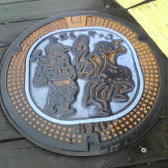
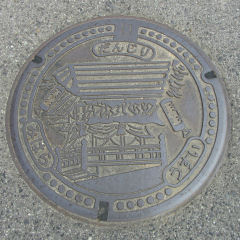
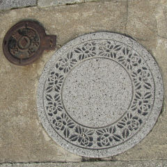
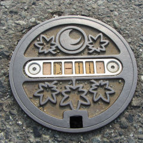
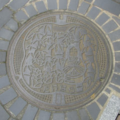
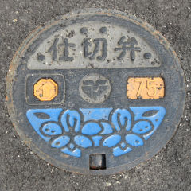
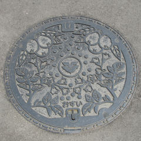

呉線沿線の旅 Ｐａｒt １

三原市内
三原ヤッサ踊り。
やっさもっさほっじゃせー！
（詳しい意味は不明）
千葉県木更津の
「やっさいもっさい」
と音が似ている。
（関連不明）

三原市幸崎町
ふとんだんじり
淡路島でも同様の
祭りがあるようだ。
伝統ある祭りも
第一回目は
決まりなんてなかった。
だろうと思う。（妄想）

サイズ的には
住宅用の汚水桝
と思われるが、
石彫りの高級品なのか？

ヒロシマの「ヒ」
を図案化。

竹原市竹原町
竹取物語のかぐや姫。
グラデーションが奇麗だ。


東広島市安芸津町
安芸津駅付近にて。

枇杷（びわ）
琵琶（びわ）
漢字もよく似た感じ。
楽器の「びわ」と
植物の「びわ」と
どちらが先だろうか？